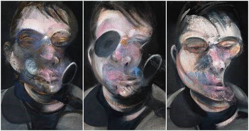
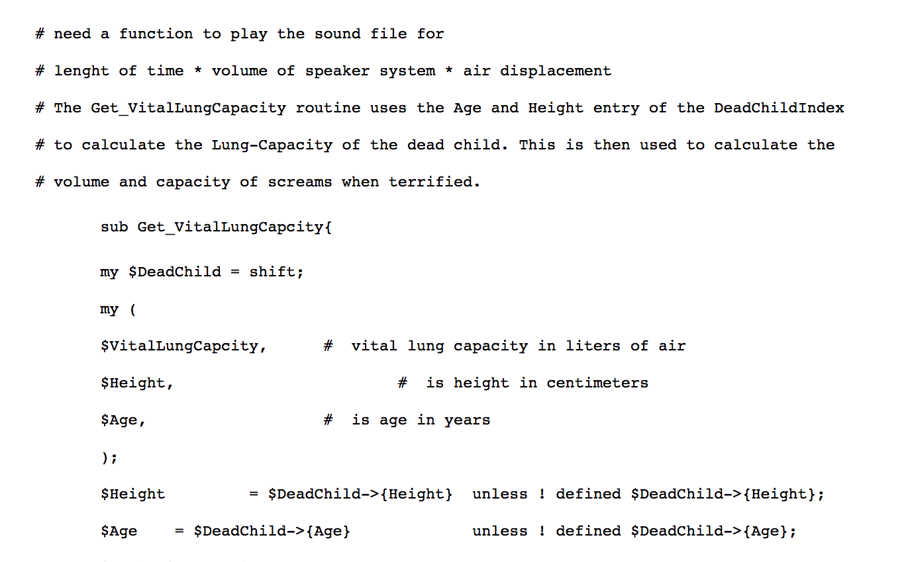

There are a lot of things in life that can be seen as "ugly" but have a certain beauty to them. Take this picture for instance, I think there are many who would say it is "beautiful" in an ugly way.
The same can be said with what this piece was getting at in my opinion. Technology is constantly evolving, and the things we can do with it are truly extraordinary. At this point, it is our creativity in using it that makes something truly beautiful or ugly. In this work, we see the "beautiful" work that was in a horrendous experiment that makes it truly ugly.
